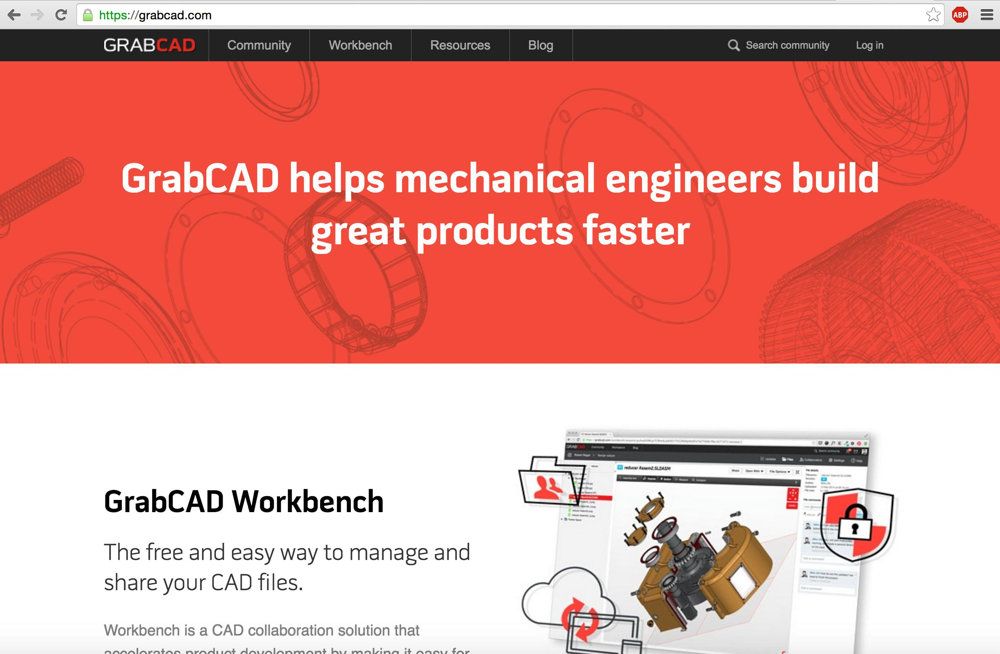
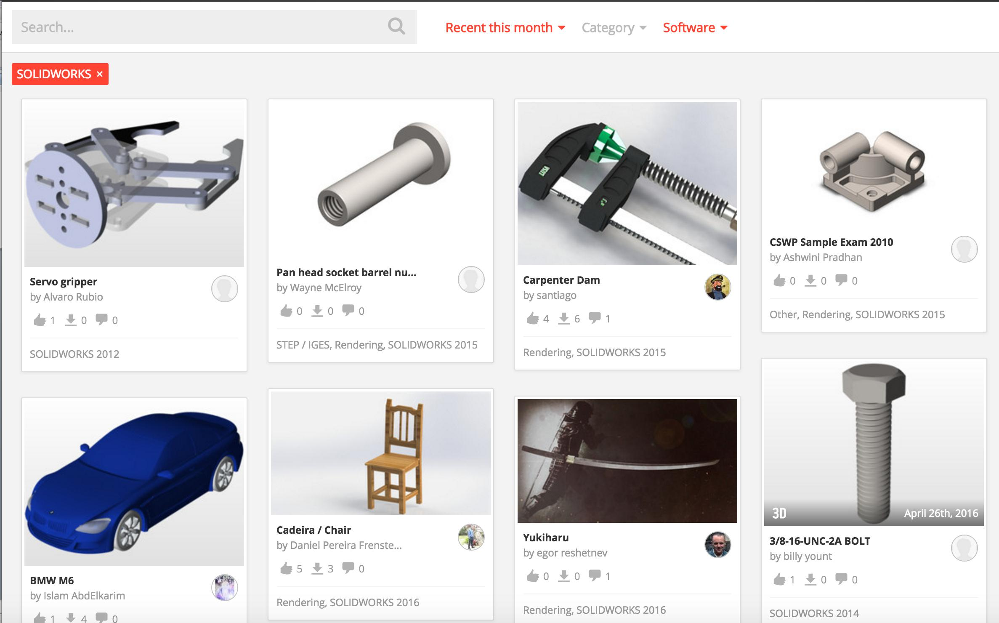
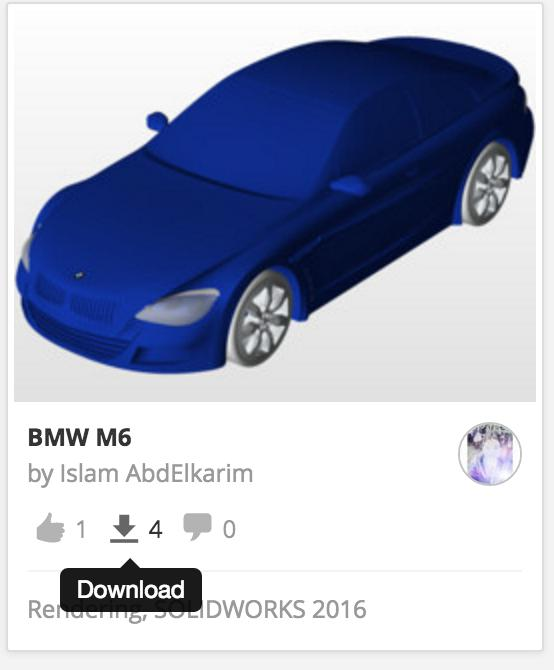

Downloading the 3D Model
Downloading the 3D Model
-
Open your internet browser and go to https://www.grabcad.com.
 -
On the top toolbar hover over "Community" and select "Library" from the drop down menu. Once you have selected "Library", choose "Solidworks" as a filter. You will then see various designs. You can either search a model or select one from this page.
 -
Once you have chosen a model, click "Download". You will be prompted to create an account. Once you complete that, the model will be downloaded. Now you are ready to set your model up for printing in the CubePro software.

Once You've Finished...
Click here if you'd like to try sketching your own 3D model.
Click here if you'd like to move on to configuring the 3D printer.